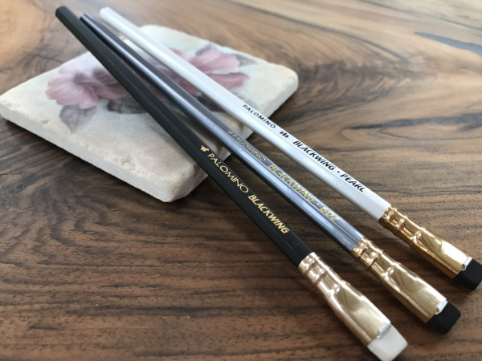

What's so special? Why are there so many?
Update: all information below is correct as of August 2017; since this article was published, there have been changes to the designs of the three core Blackwing Palomino pencils, which you can find out about here.
The Palomino Blackwing pencils are a household name amongst many artists and other creative people in areas from music to literature. They are known to have unique properties such as extremely versatile leads and flat, replaceable erasers. However, what does this really mean to you as an artist?
Today, I will be reviewing and comparing the three main pencil types of Blackwing pencils that Palomino produce (all available on Amazon.co.uk!):
Before writing this review, I had only ever used the Blackwing 602, which I bought as a single pencil at a museum gift shop, so I knew that I liked loved these pencils before I asked for even more (because–let’s face it: £2-£3 per pencil sounds, frankly, ridiculous–right?).
The 602s are the only non-mechanical pencils I have in my pencil case, and I strongly believe these expensive pencils are worth the extra cash (although they are definitely an investment!). Therefore, I decided a few days ago (while wondering around a heavenly Paperchase store), justifying a £9 purchase of Blackwing pencils with a review on my website, to buy every single type of Blackwing offered at the shop! (Yes…I don’t have a lot of self-restraint when it comes to buying art supplies…)
Note: The first ever (aka the original) Blackwing pencil was the Eberhard Faber Blackwing 602. The first Blackwing-style pencil that Palomino manufactured is referred to as the “original” Palomino Blackwing (OPB), and the Palomino Blackwing 602 is a pencil introduced later that is meant to mirror, more closely, the (original) Eberhard Faber Blackwing 602. Confusing, right?
The original Eberhard Faber Blackwings were a leading product for creating, used by many notable musicians, artists and authors in the late 20th century. When the pencil was discontinued in 1998, there was upset amongst creators (with pencils being sold individually for up to $40 on eBay!), until Palomino unveiled their revived family of Blackwing pencils, years later. Even the Palomino Blackwing 602, the pencil that was meant to be the closest replica to the original Eberhard Faber Blackwing, carries the same slogan on the barrel of the pencil: "HALF THE PRESSURE, TWICE THE SPEED".
The idea of the three pencils was to allow Palomino to create pencils which would suit any creators' needs: the 602, most like the original Eberhard Faber Blackwing 602, was aimed at writers, musicians and for everyday use. The original Palomino Blackwing was created specially with artists in mind, hence the softer, darker and more matte lead, white the Pearl was meant to serve as a middle ground between the two.
At first glance, you can tell, by just the appearance, the Palomino Blackwing range is unique. At around half an inch longer than your standard pencil (20cm/7.9 inches), these pencils look very impressive. Not to mention the unique flat eraser which can be removed and replaced, secured with an eraser clip. One issue with this feature is that the eraser clip can be quite weak when opened and closed, leading to snapping (which has happened to me on one or two accounts when I've lent pencils to school friends, or been careless myself).
The pencils' outward appearance also looks very professional–shiny white (you could say–pearl?!), silver (same as the original Eberhard Faber Blackwing) and matte black, for Pearl, 602 and the original Palomino Blackwing, respectively. I like how the colours complement each other, with the gold addition for the eraser holder and for some of the text. They look great, so let's try them out!
When I first sharpened these pencils, I was amazed at how well they put down graphite. All three pencils sharpened to a fine point and, even when I used a heavy hand and a lot of pressure, the leads did not crumple! I swatched them and compared to a 2B mechanical pencil, and all three Blackwings can go darker than 2B, as well as the Blackwings more easily accessing a wider range of shades when I created gradients with each. All of them also blended better with a blending slump/tortillon than the mechanical pencil.
As someone who readily uses the Blackwing 602, I was used to the amazing range of tones achieved by this one pencil (in fact, I have done GCSE art exams in the past where I have only used this one pencil, compared to classmates who have had to use all the pencils in the range of 4H to 6B). It feels quite hard (around a B, in my opinion), but the lead can go as dark as around 2B or 3B.
At first, I was a bit disappointed with the Blackwing Pearl, in honesty. It felt and appeared practically identical to the 602 at my first glance. However, I did some further testing and comparing between the two, and I must admit the Pearl does have a slightly more matte, darker lead (the 602 is shinier, like a normal graphite, which is a bit more silver looking). Looking at my swatches again, I should say that the Pearl feels like a 602 but looks like an OPB. The Pearl had grown on me by the end of testing, but I still would not buy both a 602 AND a Pearl–they are practically identical!
The pencil out of the three that I was most excited about was the original Palomino Blackwing and I was certainly not disappointed! The lead is as dark as a 6B pencil, yet the Blackwing kept a sharp point, rather than crumpling, even when pressed down fairly hard on the paper. This lead was also more matte than the 6B pencil, in my opinion, making it ideal for artists who may want to hang up finished sketches. It does feel significantly softer than the Pearl and 602, and that really was the first thing I noticed about this pencil, so it may not be suited to general sketching (it also smudged most easily out of the three). I definitely would not recommend this pencil for everyday use in writing or general stationery; this pencil is for art and art alone!
I decided to compare these three pencils alongside each other, looking at how easily one could create a gradient, and how soft the leads were (i.e. how easily the graphite smudged). I used a blending stump/smudging stick/tortillon to show how well the pencils smudged: the first being a single line where I pressed down heavily with the pencil, and the second where I was smudging another pre-drawn gradient.
I compared all the Blackwing pencils to a standard, (2B 0.5mm lead) mechanical pencil, and sharpened all the pencils to a point before starting, as the Palomino Blackwing 602 is, apparently, comparable to a 2B pencil. The first gradient, shown above, shows how the mechanical pencil lacks the ability to create a large range of shades for a long, smooth gradient (hence, the gradient goes very quickly from a near-black to a light grey, with a very short transition), which the Blackwing pencils possess.
It is possible to see that the OPB and the Pearl have darker leads than the mechanical pencil and the 602, but only by a fraction!
Unsurprisingly, the OPB took best to the blending stump and smudged very smoothly (as well as a 6B pencil, I’d say–not quite charcoal, though!). The mechanical pencil smudged…the worst…and the 602 was just a bit better, followed by the Pearl. Although the Pearl does look like it blended as well as the original Palomino Blackwing, it really does not feel anything like the OPB! As mentioned before, the Pearl feels exactly like the 602, even if it looks like the OPB–it’s pretty crazy, right? (The Pearl, in fact, kept growing on me, more and more, as I continued to use it!)
I was amazed by the quality of the OPB, but I did feel like the lead was a bit too soft for my everyday rough pencil sketches or even for the entirety of a more finished sketch. The lead was just too soft and easily blended so my hand was often smudging the pencil lines. I think one of the other two pencils would be great for rough sketching or the beginning sketch, before using the OPB to add more depth, through darker shades, to complete the piece.
If you do not think these pencils are unique enough already, the Blackwing company even offer an annual subscription to collect limited edition Blackwing pencils, honouring various names or places that have contributed to the arts. A year’s subscription offers four quarterly sets of 12 pencils, as well as some information on the history of the person or place.
The graphite of these pencils is labelled as “soft”, “balanced”, “firm” or “extra firm”, equating to the OPB, the Blackwing Pearl, the Blackwing 602 and a harder lead (similar to a B or HB) respectively.
I really love how these pencils capture an aspect of history in them, and there is clearly a lot of thought put into the design of these pencils. For example, the limited-edition pencil I picked up at Paperchase, the Blackwing 344, honours photographer Dorothea Lange, and the pencil design mirrors what a Blackwing 602 would look like in a darkroom. The number “344” references the Library of Congress LOT 344, which contains many of the photographs taken by Lange.
Personally, I would not pay $99 for four sets of these limited-edition pencils, but it is a very nice idea which I am sure appeals to audiences with more money to spare. Some of these pencil designs are absolutely stunning, however, such as the Blackwing 205 (inspired by jade and the Silk Road) and the Blackwing 24 (which pays tribute to John Steinbeck). It would be nice if Blackwing could offer a subscription of single pencils (1 of each limited edition and four a year) for a reduced price, but these collectables are a luxury to begin with.
In conclusion, I believe the positives for these pencils far outweigh the negatives of Palomino Blackwing pencils. I would personally buy one OPB and one 602 to start with, to see what you prefer in a pencil. If you like the look of the OPB but would rather a harder lead, like the 602, get a Pearl to try out. I know some like to collect all the Blackwing pencils and all the limited-edition pencils as well but, realistically, most people probably don’t need more than one fancy pencil to use. I would personally be happy with a set of Pearls or 602 for my art, but I certainly will not shy away from treating myself to the OPB when I get the chance!
